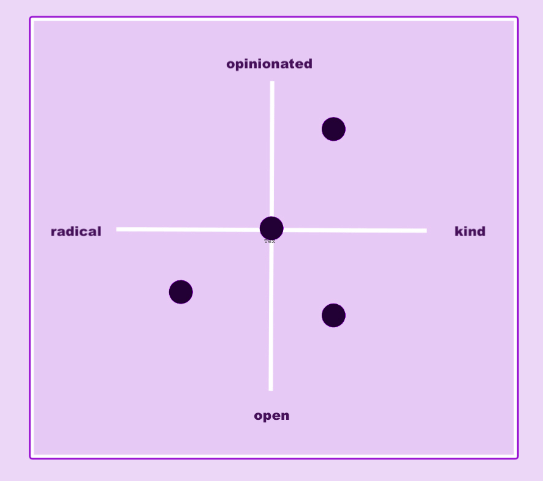

Mwongozo wa nakala ya ujanibishaji wa Firefox
Hati hii imekusudiwa kuwezesha uundaji na ujanibishaji wa nakala na kusaidia utayarishaji bora na uthabiti. Hii ni hati hai na inaonyesha hali yetu ya sasa. Kama usemi wetu wa bidhaa unavyoendelea kubadilika, tutafanya sasisho kwenye hati hii.
Kwa nini mwongozo huu ni muhimu kwa ujanibishaji wa nakala ya uuzaji ya Firefox?
Mwongozo huu umekusudiwa kukusaidia kuelewa vizuri Firefox kama chapa ili kupata maoni bora ya jinsi ya kutafsiri katika lugha yako. Kwa kuongezea, tutashiriki chaguzi za maneno maalum na mahususi ya kampuni na tahajia ili kuwezesha mchakato wa ujanibishaji.
Nakala yetu haipaswi kutafsiriwa moja kwa moja, lakini inapaswa kuonyesha utu na sauti ya chapa yetu na kuboreshwa kwa mtazamo unaofaa wa kitamaduni na lugha. Nia ya kihemko na ya mfano ya matini chanzo inapaswa kubadilishwa kwa lugha lengwa.
Kuhusu Firefox — Sisi ni nani
Firefox ni zaidi ya kivinjari tu. Firefox ni chapa inayopinga hali iliyopo na kutetea haki za watumiaji mtandaoni.
Katika kila kitu tunachofanya, tunaweka mbele haki na mahitaji ya watumiaji. Na kama kampuni ya teknolojia, sisi huweka watu mbele ya faida.
Firefox kama chapa inachanganya maadili ya Firefox na bidhaa zetu zinazohusiana.
(Mozilla ni shirika lisilo la faida lililoanzisha Firefox.)
Ahadi ya chapa:
Firefox inakupigania
Kile tunachopigania:
Firefox inapigania watumiaji wetu kwa kuunda bidhaa zinazowapa watu udhibiti na uwakala juu ya maisha yao mtandaoni.
Bidhaa:
- Firefox Quantum (Kivinjari cha Kompyuta)
- Firfox Mobile (Ya iOS na Android)
- Firefox Monitor
- Mozilla VPN
- Firefox Private Network (FPN)
- Firefox Relay
Tabia na sauti
Tunazungumza na nani?
Tunaeleza hadhira yetu lengwa kuwa Wachaguzi wenye Ufahamu. Hii inahusu watu ambao hufanya au wanataka kufanya maamuzi ya ufahamu, mtandaoni na nje ya mtandao.
Wachaguzi wenye Ufahamu:
- Unda mapendeleo na ufanye chaguzi za watumiaji kwa makini na uangalifu
- Jitahidi kupatanisha matendo yao na maadili yao
- Ni wateja wanaodai
- Mara nyingi hufanya utafiti wao wenyewe kuelewa chaguzi zote kikamilifu
Ndani ya Wachaguzi wenye Ufahamu kuna vikundi viwili ambavyo tunajaribu kuzungumza navyo. Kujali Usiri na Vikuzaji vya Ujasiri.
Kujali Usiri:
- Uwezekano zaidi wa tayari kuwa watumiaji wa Firefox
- Huipa kipaumbele faragha na wako tayari kutumia pesa kuhakikisha usalama wao wa dijitali
- Wanaamini kuwa intaneti ina wajibu wa kuwalinda wananchi wake
Vikuzaji vya Ujasiri:
- Wafuasi wa mtindo na waanzisha mtindo
- Wanataka rafiki na wafuasi wao washuhudie chaguz bora wanazofanya
- Wanajitahidi kuishawishi jamii yao kufanya chaguzi za kina pia
Sifa za Chapa yetu na Tabia ya Chapa ya Firefox
| Sifa | Tabia ya Chapa ya Firefox |
|---|---|
| Inashikilia Maoni Yake | Firefox inatenda kutokana na imani na inakuwa na misimamo inayobainika kwa ujasiri. Bidha zetu zinaonyesha kuwa motisha yetu inatokana na maono ya chapa yetu. Maadili ya chapa yetu yanapatikana kwenye kila kitu tunachokifanya. Na hilo ndilo jambo tunalotaka kuwaambia watumiaji na washirika wetu. |
| Huria | Firefox inadhani kuwa intaneti inapaswa kuwa huria, ya kufikiwa na salama kwa kila mtu. Tunajitahidi kuanzisha mazungumzo na ushirikiano. Sisi: Tunakubali maoni ya wengine. Ni wakweli. Ni programu huria. Mtazamo wa kimataifa ni sehemu muhimu ya chapa yetu. Tunazungumza lugha nyingi na kujaribu kuchukua mitazamo tofauti. |
| Karimu | Firefox inatarajia mahitaji, kutoa masuluhisho na njia mbadala ambapo uhuru na haki za watumiaji zinatishiwa au kudhulumiwa. Tunawatakia watumiaji wetu na ulimwengu mema, kwa hivyo tunakuwa mfano. Tunaunda bidhaa bora, tunaanzisha mazungumzo, tunafanya kazi kwa uwazi na wengine, tunajielimisha wenyewe na wengine na tunawahabarisha watumiaji wetu. Kwa kufanya hivyo, tunatenda kwa kutambua maono ya watu wote. |
| Hatua madhubuti | Firefox inauliza hali iliyopo na desturi za kawaida za kampuni kubwa za teknolojia na changamoto na inachukua hatua madhubuti za kuwa na intaneti bora. Kuwa na matumaini ya siku zijazo za intaneti ni tendo madhubuti. Kuyapa kipaumbele mahitaji ya watumiaji badala ya yetu ni hatua madhubuti. Tunapinga hali ilivyo kwa sababu tunadhani ndilo jambo sahihi la kufanya. |
Tabia ya Chapa ya Firefox inafafanuliwa na utumiaji wa sifa hizi. Kutegemea na muktdha, sifa inaweza kuwa maarufu sana au kidogo.

Sauti
Chaguzi za sauti na lugha yetu ni:
| Sauti | |
|---|---|
| Za moja kwa moja, bayana, rahisi kuelewa | Tunataka watumiaji wahisi kukaribishwa na tunatumia maneno na dhana ambazo kila mtu anaelewa. |
| Muhtasari | Tunapenda habari fupi, vifungu vya maneno na mwito wa kuchukua hatua ambao ni bayana. Tunajaribu kuepuka muundo wa sentensi ambao ni tata au sentensi zisizo na thamani. |
| Halisi | Nakala yetu — kama bidhaa zetu — imetengenezwa na binadamu kwa ajili ya binadamu. Tunazungumza na watumiaji wetu kama watu wenye mamlaka sawa na kutumia lugha ya kawaida. |
| Kawaida | Tunaandika kwa kauli tendi na kutumia kauli tendwa kidogo. Epuka mtindo wa nomina. Tunapendelea sentensi mbili fupi badala ya moja ndefu. |
| Heshima | Heshimu bila ya kuonekana kuwa rasmi sana. |
| Mcheshi | Kuwa mcheshi bila ya kuwa mwenye mzaha au duni. |
| Muhimu | Tunakutana na watumiaji wetu pale walipo. Wanapaswa kuelewa maudhui yetu haraka na kuhisi muunganisho wa binafsi. Lazima marejeo ya utamaduni yawe na maana na kuafiki soko badala ya kutafsiriwa moja kwa moja bila muktadha wa utamaduni unaofaa. |
| Tumaini na kumotisha | Tunaamini kwa siku zijazo zenye matumaini kwa intaneti. Ingawa wakati mwingine tunazungumza kuhusu mambo ambayo hayaendelei vizuri sana, tunapendelea kuwa na mtazamo wenye matumaini. |
| Bunifu | Ingawa maelezo na ubayana ni mambo ya kwanza, tunapenda kutumia lugha bunifu na ya kuvutia kwenye nakala yetu. Hatutaki kamwe kuonekana tusiovutia na kuchusha. Tunajaribu kuepuka utafutaji soko wa dhana za kawaida. |
Faharasa ya msamiati / Misamiati inayojirudia (KAZI INAENDELEA)
Endapo una mashaka, unaweza kurejelea transvision search. Hata hivyo, kama utafutaji unavyoonyesha kila mara matoleo ya zamani ya tafsiri katika orodha ya matokeo (mara nyingi ikiwa na anwani rasmi), zana hii inatumika kama mwongozo.